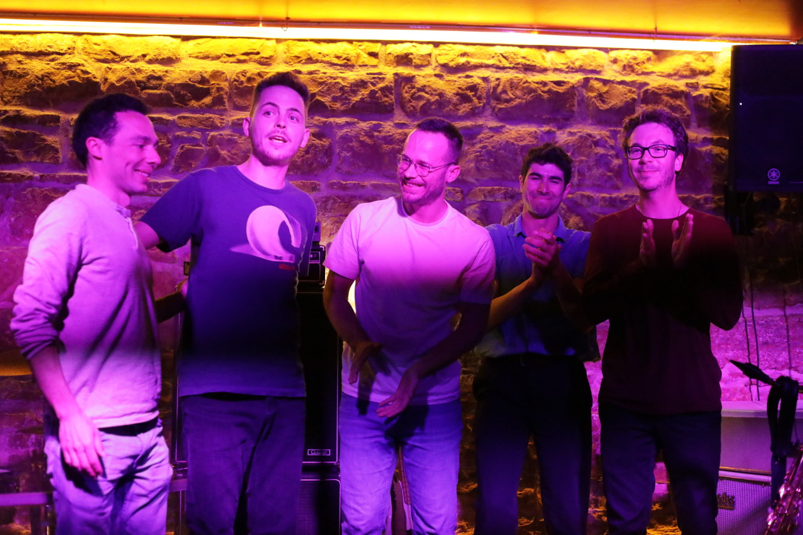

Groupe de musique pop-jazz basé à Villeurbanne (France)
 credit photographie: @wiileewallart
credit photographie: @wiileewallart
L'Equipage est un quintet pop-jazz qui s'est constitué autour des retrouvailles de cinq amis ayant pour passion la musique, le sport (le vélo, la course, le badminton, la voile... ), les voyages (en vélo surtout !)... une fine équipe qui voyage, un équipage qui compose et vous transpose d'asymétrythmes en mélodismes, sans lésigner sur le gros son ! Une esthéthèque, plus qu'une étiquette, il s'invente son style en collectif, et ça compose pour les oreilles, avant toute autre distraction.
Saxophone : Alexandre Franchimont
Rhodes : Emmanuel Roux
Guitare : Thibaut Dallery
Basse : Laurent Deroche
Batterie : Thomas Fraissenon
Contactez l'EQUIPAGE par courriel: contact@asso-motifs.fr
Concert à La Grooverie à Lyon (26/04/2024)
 credit photographie: Inés MeridaLe vendredi 26 avril 2024, l'Equipage a présenté, en deux sets, 14 compositions. Le public semble avoir très fortement apprécié la soirée, et Balthazar de la Grooverie agréablement surpris (même son barman semble avoir apprécié !), car au delà d'une Grooverie très bien remplie, les mélodies "chantent bien et sont accessibles"... ce qui débouche sur la proposition d'une nouvelle date pour l'automne 2024, à suivre !
Voici une captation de "One For Chick", directement dans l'atelier de musique de MOTIFS :
Voici une captation de "Four Trees", directement dans l'atelier de musique de MOTIFS :
Bientôt l'album ?!
Vous pouvez soutenir l'Equipage en finançant l'enregistrement d'un disque sur lequel seront gravées les musiques composées et interprétées par l'Equipage: une campagne de financement participatif va prochainement être mise en place, mais si vous souhaitez aider le groupe dès maintenant vous pouvez effectuer un don à l'Association MOTIFS en précisant par e-mail votre intérêt pour le projet, la date et le montant de votre soutien.
>>> soutenir l'enregistrement du premier album de l'Equipage en effectuant un don à MOTIFS sur le site Hello Asso <<<